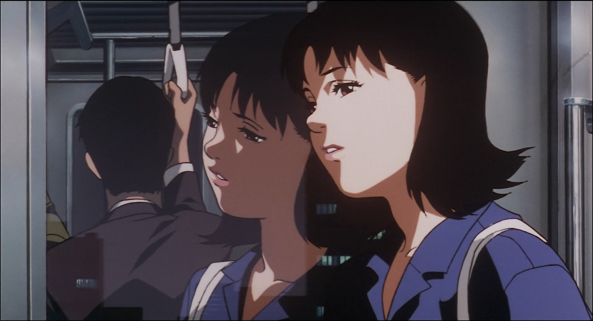

Perfect Blue
It’s been a while since I’ve been wanting to write about a movie here on my blog, almost all of my drafts are about movies nowadays, but since I have no experience writing about the films I watch, I couldn’t really settle on how or what to write about. I finally made the decision to write about Perfect Blue when I was discussing this dilemma with a friend of mine. So thanks! You who shall remain anonymous.
The works of Satoshi Kon have always left me mesmerised. I had seen Paprika prior to Perfect Blue and it was also quite hard to grasp on but equally engaging in the same manner. Perfect Blue is honestly close to perfect in so many ways, the great cinematography, the amazing characters, mystifying eerie soundtrack. The self references in this movie are superb, the originality in both form and content bewilders me. The themes that the film delves into, to me, are situations that anyone would find themselves into in a coming of age scenario. At the same time, the psychological aspects of mimarin’s journey on the surface level, brought to the wild extremes, are not usually thought about when pondering about such feelings. Without further adieu let’s first dive into the character of Satoshi Kon’s Perfect Blue and then jump into different segments of the movie. I’ll try to convey what I understood of the plot and the underlying themes within the breakdown of the film chronologically in 4 segments.
DISCLAIMER: Reader discretion is advised! Included are themes of gore, rape, paranoia, stalking and identity dysphoria! Also, Spoiler alert obviously
Characters
Mima & Rumi
- Mimarin : The protagonist of the story, A young pop idol in the group CHAM, moved to Tokyo to sing. She decides to step down from the idol world and start a career in acting, completely reshaping her image in the publics eye and transitioning into an actress.
- Rumi: One of Mima’s managers. Former pop idol, turned manager of entertainers. She is keen on the fact that Mimarin is better off as a pop idol and that she can’t become an actress.
- Me-Mania: A fan of CHAM, one of the bodyguards in the last concert of CHAM that Mimarin appears in.
- Idol Mima: An image. The complete form of a pop idol that is Mimarin. Always appearing in the dress that Mima wore in her last concert. Also this character has two ways of appearing, in the beginning it’s just an image but later in the film, a physical manifestation is also attached.
Me-Mania
The characters are presented in a basic way, I will go into the transitions of each of them as we move along.
Metamorphosis
CHAM!
The movie starts by introducing us to CHAM, a pop group that is compromised of three memebers, one of them is Mimarin, the main character of the film. CHAM is holding a concert in an open arena, this is the last concert that Mimarin is going to be in since she is leaving the group to pursue a career in acting. There is a group trying to start a ruckus in the concert, one of the bodyguards, Me-Mania, gets in a physical fight with them and after that they leave. Mimarin smiles at Me-Mania and he notices that. She performs her last song, she then goes on to perform in a television series where she has only one line. The voice of Mima when she sings is evidently different from when she talks, I think this is just a technical shortcoming, but it’s funny how it signifies that Mima is not quite herself when she’s performing as an idol. Since this part of the movie shows the difference between Mima as an idol and her daily routine, this could actually apply. Rumi is upset with her leaving CHAM and it shows. Mimarin goes home to find mail about something called Mima’s Room. At first she thinks that the mentioned Mima’s Room is her actual room and her paranoia begins to grow. She receives a weird phone call and at the same time she get’s a fax with the words TRAITOR written repeatedly on it.
Double Bind
She goes on set to act her line in the television series Double Bind. Rumi is there, still distressed about the fact that Mima is trying to become an actress. Rumi tell’s Mima about the mail she got, Mima’s Room is apparently a web page about Mima. Me-Mania is spotted on the set, A letter is received by one on Mima’s managers ( not Rumi ) and it’s blown in his hand. On the letter is said that “this is only a warning”. She get’s home visits the website and at first she is amused by it but more paranoia follows after. The page has, in detail, everything that Mima has done everyday and is presented from Mima’s prespective meaning there is detailed sentiments of her each day. She see’s a newspaper article that says the ruckus makers of the concert are in critical condition, then she notices Me-Mania looking at her. She starts seeing Me-Mania as a symbol for violence.

Mima’s Room
The new CHAM with two members is doing amazing, hitting the top 100 chart. Mima recognizes this and doesn’t know what to feel about it. She is also approached for a modeling opportunity on the street. The screenwriter for Double Bind has decided that Mima should play in a scene in which the character Mima plays get’s raped. Considering all of her acting career up to that point is just one line in the show that is devastating. Rumi opposes this harshly but Mima decides that she has chosen to be an actress and that she should do this scene.
How did it get to this…
Mima does the scene and while acting, is reminded of how loved she was by her fans when she was in CHAM. A feeling of lost purity and innocence ensues. She is conflicted but she decides to think of it as a part of graduating from being an idol and becoming an actress. She goes home to find that her fish have died, this finally breaks her and she starts panicking. Crying and trying to convince her inner self that she also didn’t want to do the scene. This is the first time in the movie that we start seeing the image of Idol Mima in different reflective surfaces. Mima see’s an image, Idol Mima, degrading Mima for doing the scene. She is conflicted.

She didn’t want to do it either.
We get a scene of Me-Mania writing in the Mima’s room web page. In a particular scene he is shown from behind. And I couldn’t help but notice that there is a rope attached to the top of the room all the way to the bottom; I think this is foreshadowing the idea that Me-Mania is somehow being deceived to believe things that are not true and is forced by outer knowledge to do stuff.
Idol Mima is appearing more as we progress, talking to Mima and trying to degrade her and tell her that she is tarnished. Also this is the point in the movie in which we get arguably the BEST eerie music of any psychological thrillers of it’s time. The screenwriter for Double Blind is killed mysteriously in an elevator, with CHAM blasting from a speaker. And That concludes the Double Blind segment.
Divergent Reflections
Mima see’s Idol Mima again and her paranoia grows even more when she hears of the screenwriters death. She signs a modeling contract with a photographer that is known for getting nude images of his models. And the photographer does just that.Idol Mima talks with Mima again, trying to tell her that she was better off as an Idol. It’s apparent at this point in the movie that Idol Mima is a mental character developed by Mima as a result of deception from Mima’s room and her own conflict with her identity.
Divergent Reflections
We see a scene with Me-Mania in his room, mailing with someone that is supposedly the real Mima obviously this is not the case, he is told by the real Mima that the Mima that is an actress is actually an impostor and that he should buy all the magazines with Mima’s nude photographies in it. He is told to get rid of Mima. Once an eager fan of CHAM and Mima is now pushed by deception with someone to act bizarrely, at this point it’s known who was behind all of the gore and killing. Radicalized by the para-social relationship that he has developed with his favorite icon.
Idol Mima Hugging Me-Mania
More and More and More Occurrences of Idol Mima are happening. Mima is becoming more distressed and detached from reality. She sees Idol Mima talking on the CHAM podcast and starts following her, the persuasion ends in Mima getting hit by a truck. Mima wakes up after that as if she has had a nightmare. Rumi visits Mima and talks to her, being very subtle, she tells Mima that she should stop visiting Mima’s Room. However it’s kind of obviously apparent that she is hinting it in a reverse psychological way. Mima can’t tell the difference between reality and what’s not real anymore. In the next visit by Rumi, Mima seems completely cut off, breaking tea cups, to see if her blood is real. The only way that she can tell if she did something or not, is by reading the posts on Mima’s Room.
I guess… I went to Harajuku today…
The Modeling Photographer of Mima, is receiving a pizza and get’s killed by the person who brought the pizza to his house, we find out that it was Mima who did that, and then get the shot of her waking up again as if she was having a nightmare with the blood soaked delivery clothes still in her closet. She is being deceived to do unspeakable acts without knowing it. Upon finding this out, she is conflicted even more with the grasp on reality. She can’t tell if she’s acting or dreaming or doing something in the real world anymore. The anger of Idol Mima is manifesting itself in her brain and forcing her to do all of this. After a shoot for the series Double Bind, Mima is kidnapped by Me-Mania, and in the intense physical struggle that ensues, she is almost raped by Me-Mania before knocking him unconscious and then finding her in front of camera’s as if she was acting. Later she finds herself in her apartment but something is off, the fish are alive, the CHAM poster is up and her house has been relocated, so it’s definitely not her apartment. Idol Mima greets her in a new red dress. Mima finds out that this image of Idol Mima is actually Rumi. It was her all along who pretended to be the Real Idol Mima.
Rumi is Idol Mima.
They fight and eventually Rumi get’s stabbed by a big glass shard and goes unconscious, Mima is also hurt. The film ends with Rumi in a mental hospital , rarely getting out of the Idol Mima character. Mima has found her identity as an actress and is no longer haunted by the images of Idol Mima.
Shattered Mirrors.
Epitaph
No, I’m real!
Rumi, a former Pop Idol keeps her sanity by religiously praising Idol Mima in her mind and managing her. When Mima is not an Idol anymore Rumi becomes more deranged as time goes on, and start to develop the Dissociative Mental disorder that makes her think that she is Idol Mima. She deceives Mima, Me-Mania, herself even. To the point where Mima can’t know if anything is real or not. But eventually Mima prevails. Now The absolute concept of coming of age, to let go of your innocence and become an actor when you grow up is neatly portrayed in this movie; However one cannot do without pointing out that the very psychological aspect of such situation is what creates the mere horror. The fact that Mima herself, to some extend, could not let go of her innocence and feared to not be as popular and loved as she was, had she stayed in CHAM. The fear of lost opportunity, the horror of not being in the spotlight, the vulgarity of her career taking away her purity is too much to bear. Satoshi Kon does an amazing job at pointing out how identity dysphoria can develop in our age and how the fans can develop harsh and unrealistic para-social relationships with their icons to the point that they idolize them so much that they can actually become demented and do anything to be in touch with them. Satoshi Kon somehow just knew that this would be a thing before anyone did. Look at any online platform and how these streamers/youtubers/etc. are actually talking about the weirdness of para-social activities of their so called fans. How this concept feed into sexual idolization and how platforms like onlyfans can milk even this psychotic behavior for money. That’s all I have to say about this movie. I’ll try to keep future posts about films shorter and not delve into each and every detail of it. I’m kind of a novice, and It’s definitely been a great experience writing about perfect blue.
tldr of the story: Rumi gaslit everyone and was defeated in the end.
THANKS TO ALL OF YOU WHO READ THIS! I WOULD BE HAPPY TO RECEIVE YOUR COMMENTS ABOUT THIS BLOG POST SO PLEASE CONSIDER GETTING IN CONTACT WITH ME IF YOU HAD ANYTHING TO SHARE!